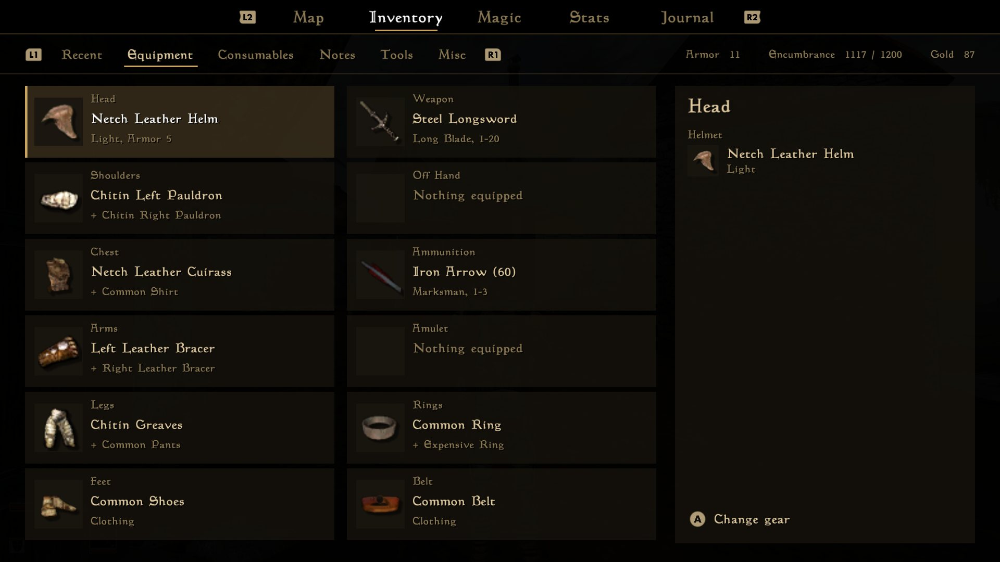
Inventory
The inventory opens on what you're wearing, with one card for each part of the body. Pick one to see everything you could wear there. Items that beat what you have are marked green, and worse ones red.
Modern Morrow is a version of Morrowind built for controllers, TVs, and handhelds. The menus are bigger, easier to navigate, with a bunch of quality-of-life improvements baked right in.
The gameplay and world are unchanged, making Modern Morrow a great way for new players to experience vanilla Morrowind, without the friction of the 20-year-old interface. It runs on OpenMW, the open-source engine for Morrowind, on Windows, Linux, Steam Deck and Android.
New players will find the modern menus much more intuitive.
Every screen works with a gamepad. Mouse and keyboard still work too.
The Android version has touch controls, or pair a controller.
Every screen in the game has been redone.

The inventory opens on what you're wearing, with one card for each part of the body. Pick one to see everything you could wear there. Items that beat what you have are marked green, and worse ones red.
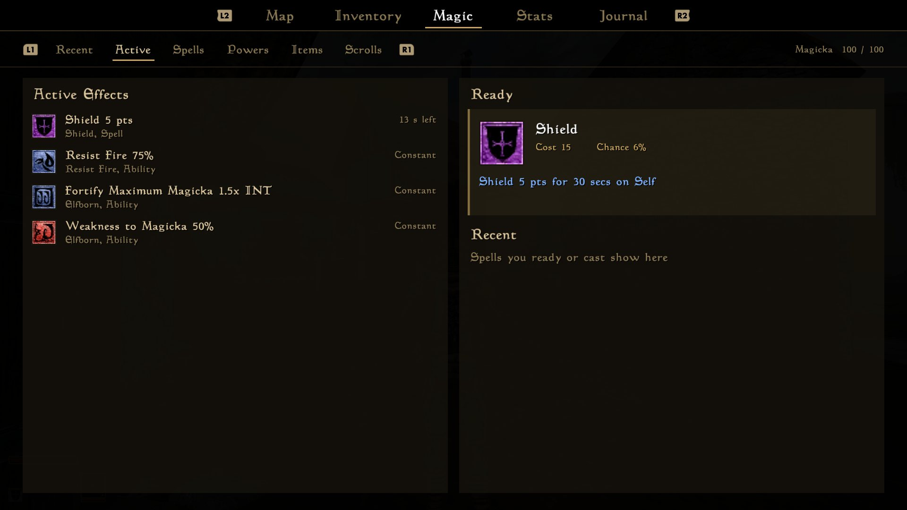
Your active effects are on the left, and your ready spell and recent spells are on the right, so you can switch back to a recent spell quickly. The Spells tab groups every spell by school.
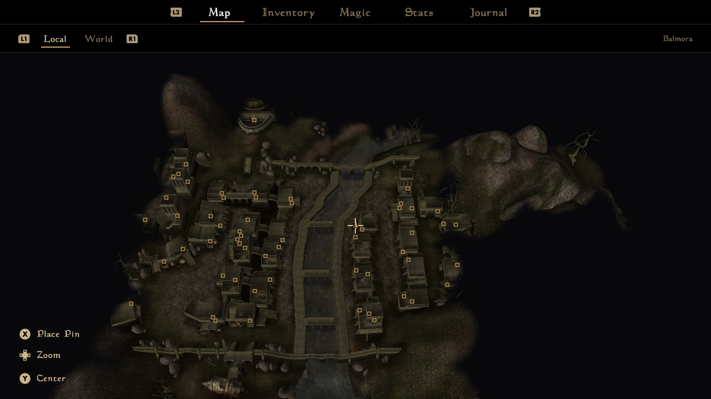
The local map is a 3D view of the world around you. You can pan and zoom it, and drop pins where you want to go. Indoor maps are 3D too, with the ceiling cut away.
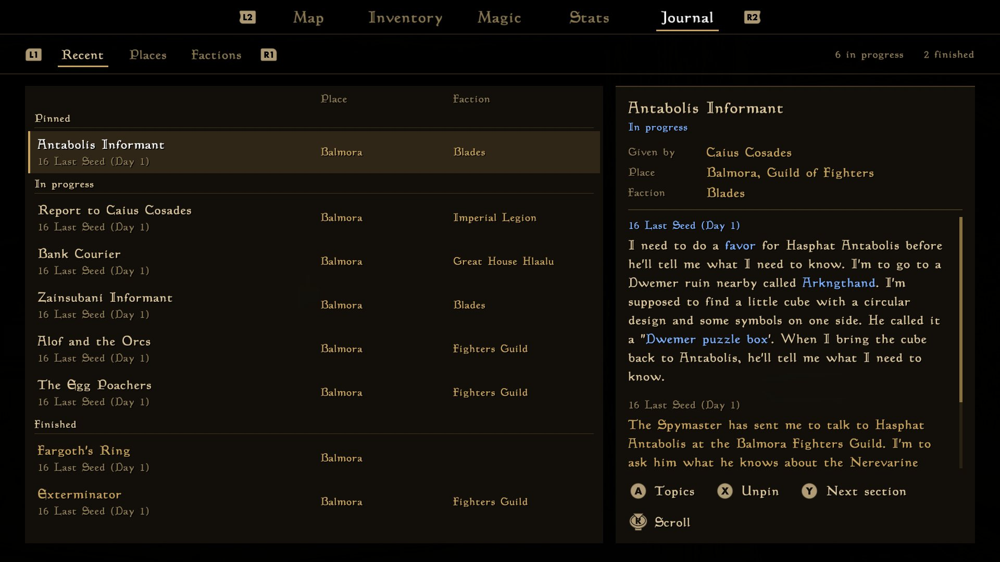
The journal is a list of quests instead of a book. Quests are grouped into pinned, active and finished, and you choose which ones to pin.
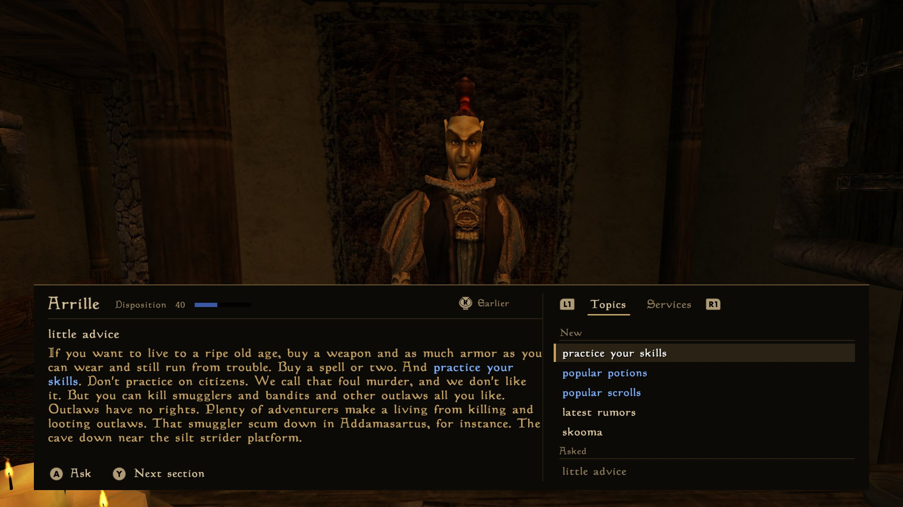
The text is bigger, and topics you haven't asked about sit at the top. Trading and training have their own tab, and the camera turns to face the person you're talking to.
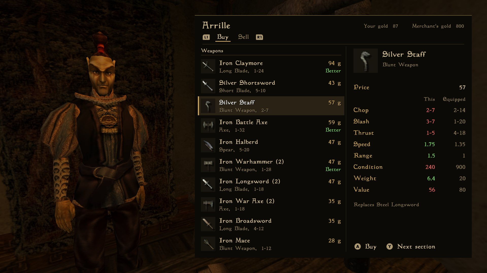
Shops and containers are lists you scroll with a stick. Upgrades are marked, and so is anything you'd be stealing.
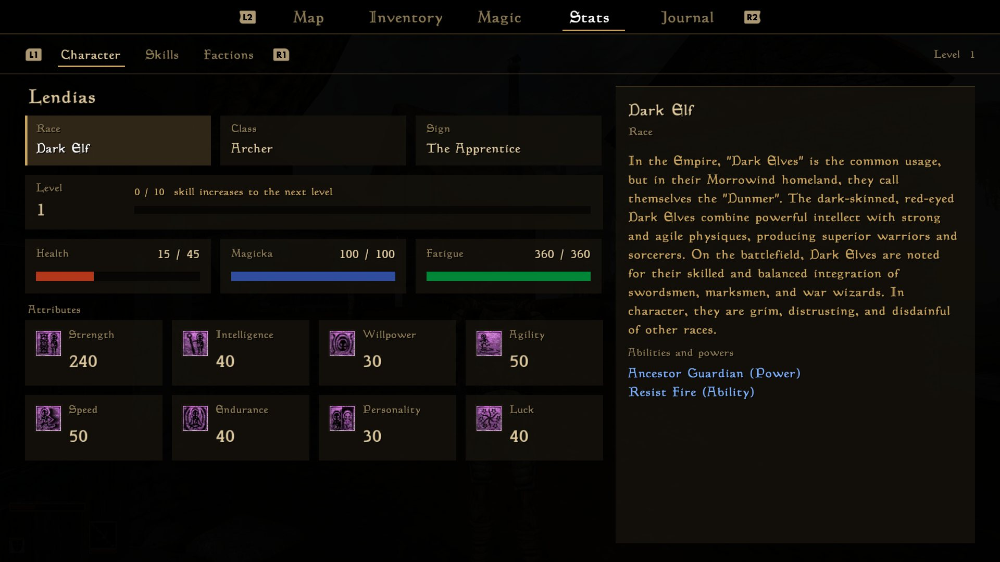
Highlight anything on the stats screen to read what it does. Each attribute shows the bonus it will get at your next level up.
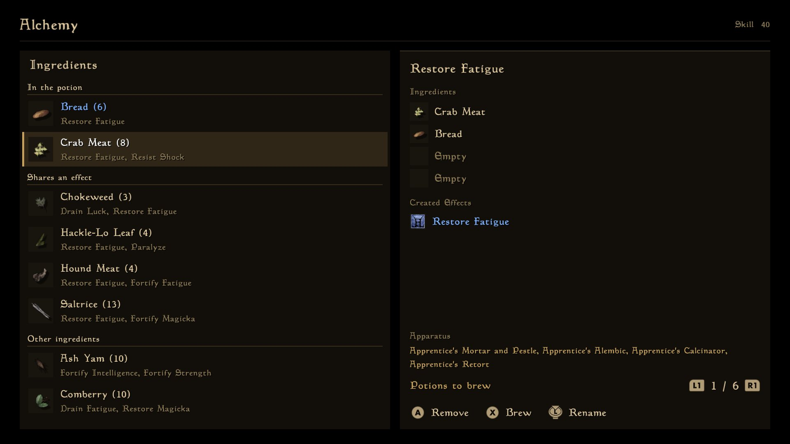
Alchemy puts the ingredients that share an effect with your potion first. Enchanting and spellmaking update the cost as you change each effect.
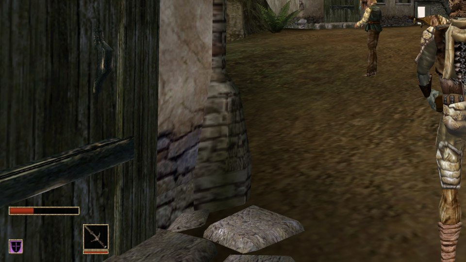
The health, magicka and fatigue bars only show in a fight, or when one of them isn't full.
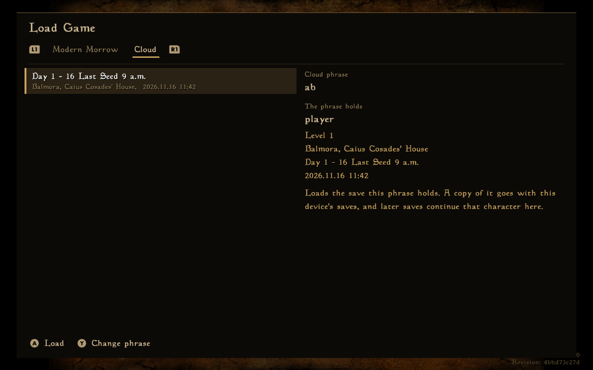
Save to the cloud on your PC and carry on from the same spot on your phone, or the other way round. Type the same phrase on each device. There's no account to make. A cloud save is kept for 90 days.
A few optional tweaks that remove common frustrations for new players, without changing much about how the game plays.
A new character can miss a mudcrab five times in a row. With this on, your misses still do 10% damage. Enemies can still miss you.
Endurance normally only adds health at future level ups. This makes it count for your past levels too.
Skill increases that a level up doesn't use normally disappear. This carries them over to the next level.
Raises the minimum run speed, for characters with low Speed and Athletics. There's also a setting for how much fatigue running drains, down to none.
Some choices lock you out of other quests, like joining a Great House. This asks before you commit. It won't say what you'd lose unless you ask for spoilers.
Shows your tracked quests on the map and on a compass at the top of the screen. Still experimental. About 1 in 20 quest steps point to the wrong place, or nowhere.
Modern Morrow runs on Android phones and tablets.
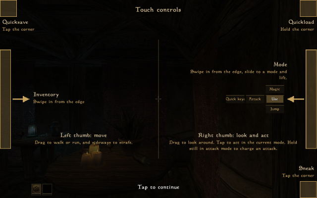
Your left thumb walks and your right thumb looks. Flick your left thumb up to auto-run, and touch again to stop. Tap to use, attack or cast. Swipe in from the left edge for the inventory, and from the right edge to change what a tap does. The corners quicksave, quickload and sneak.
Pair a Bluetooth gamepad and every screen works the same as on a PC.
You need your own copy of Morrowind from Steam or GOG. Copy Morrowind's Data Files from your phone's Downloads, from a zip, or from a computer over USB.